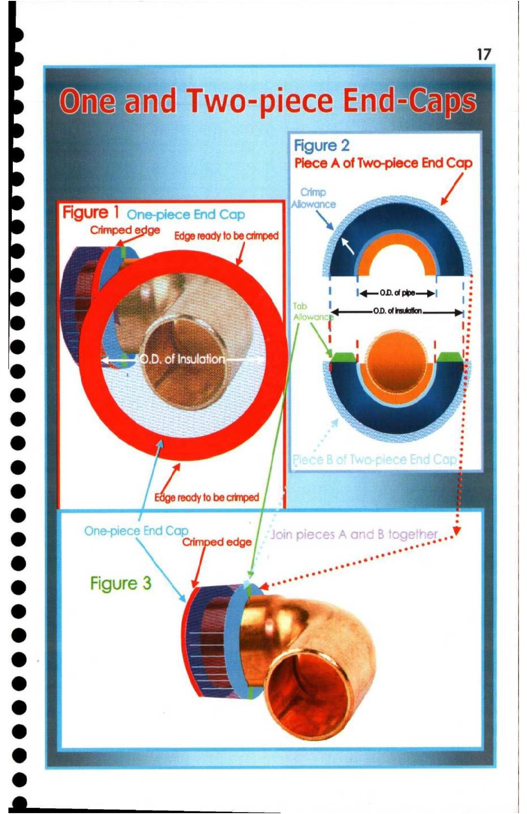

17. One and Two-piece End-caps

17 |
Wijeand Two-piece End-Gajs
aa _— -|Figure 2 _
eS >] Crimp ee |
Ld = 1 [q—0D. 01 ppe—p| ;
wii ie i es +—_» of rsxdaton —_pp,
e a :
. "2 :
: One-piece End Cap | _ . |
. > |
r ) Figure 3 |
i 4 i
° A
* y
e@ >
> |
ee —s—“—S |